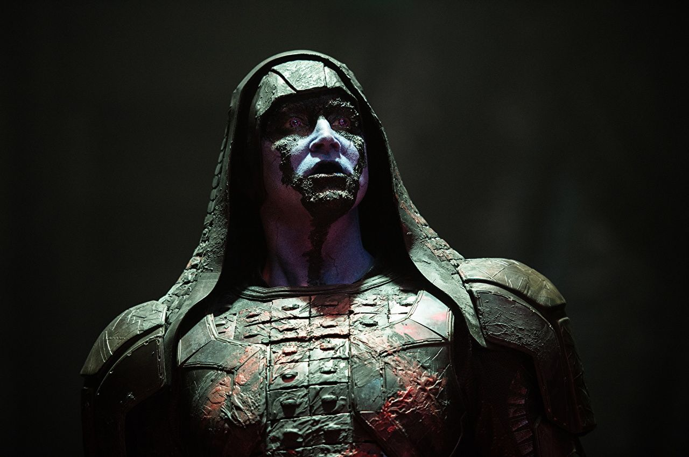

Killmonger, played by the wonderful Michel B. Jordan, is one of the MCU's best Marvel villains because he's fighting for a cause that is actually quite reasonable.
It's not just one pure evil guy (or woman) versus the heroes. A lot of thought and backstory was put into Killmonger, and it didn't start with what makes him evil.By prioritizing his motivations and personality, director and screenwriter Ryan Coogler made one of the MCU's best villains, and one of the best villains in movie history.
Loki
["Thor" , "The Avengers" , "Thor: The Dark World" , "Thor :
Ragnarok" , "Avengers : Infinity war"]
The MCU wouldn't be the same without Tom Hiddleston's Loki. Loki is the, for lack of a better word, emo adopted son of Odin and Thor's brother.
He's always felt second best, and tries to give himself something to live for by being bad. He loves his brother , and no matter how much they hate each other,
they'd actually do anything for each other when their lives depend on it. Loki is complicated and has more emotional depth than most villains in any movie.
Vulture [Spider-Man: Homecoming]
Vulture, or Adrian Toomes, played by a very well-cast Michael Keaton , who probably got this role for appearing as another man with wings in 'Birdman' , is one of the rare villains in the MCU
that has a personal vendetta against the superheroes who doesn't feel like a desperate tie-in.
The battle in 2012's 'The Avengers' affected his livelihood: He ran a company that cleaned up damage from superhero battles.But the Department of Damage Control, put together by the federal government with the help of Tony Stark, caused the company to fold.
In their final battle, Spider-Man saves Vulture's life. In prison, Vulture refuses to reveal Spider-Man's real identity,
proving that his arc throughout the movie is worth investing in.
Johann Schmidt/Red Skull ["Captain America: The First Avenger","Infinity War"]
Red Skull is pure evil - there's not even a bit of humanity left in him. He's a Nazi that became a confidant of Adolf Hitler.
But he turned his back on the Nazis in his search for the coveted Tesseract, and his mission to take over the world for himself.
He's a one-note villain, but Hugo Weaving's performance makes him more terrifying than what was on the page. He was also seen in "Avengers: Infinity War" as a Infinity stone protector because in "Captain America: The first Avenger" he touched the Tesseract cube , which is also a Infinity stone . And this stone doesn't touched by Human being
Hela [Thor: Ragnarok]
Hela (Cate Blanchett) brought the royal family of Asgard some drama that beats anything you will see on The Crown.
In Ragnarok Thor and Loki find out they have a long-lost sister who is the goddess of death.
And also she is super evil! How did they not know about this? Because Odin erased her existence from Asgardian history.
Hela (very) easily destroys Thor hammer then takes over Asgard, posing a very real threat to a kingdom that is about to meet its prophesized demise.
Obadiah Stane/Iron-Monger [Iron Man]
As the first villain in the first MCU movie ever, Obadiah Stane (Jeff Bridges) defined what these villains could and should be.
First appearing as a mentor to our hero, Tony Stark, the twist is that Obadiah has been planning to take over the company,
and is pissed when Stark decides to stop manufacturing weapons.
His motivations, while not relatable, make sense, and he has the intelligence, resources, and talent to be believably threatening.
Ego the Living Planet [Guardians of the Galaxy Vol. 2]
Ego (Kurt Russell) was so darn likeable that while it was a bit expected that he turned out to be a villain, it was also shocking and a little difficult to take in.
He was such a likable guy before we find out he is actually a really evil mass murderer! Being Starlord/Peter Quill's dad helped build some emotional attachment to Ego,
which made the twist that he was bad even better than if he had been just some guy.
The Grandmaster [Thor: Ragnarok]
Jeff Goldblum's The Grandmaster wasn't a primary villain, but it's Jeff Goldblum, so we had to include him here.
Although his role is very minor and not directly related to the overall story the MCU is telling - or even the story within Ragnarok ,
Goldblum's appearance made the movie wild and weird in the best way.
It would not have been the same movie without him.
Tony Stark/Iron Man [Captain America: Civil War]
Tony Stark isn't an outright villain here, but his selfish vendetta to make himself look good to people who hate him got his friends locked up in an underground prison.
Stark's motives made "Captain America: Civil War" a better movie: choosing sides was a huge conflict for fans, and added a lot more depth to the MCU and the Avengers as individuals.
Helmut Zemo [Captain America: Civil War]
Helmut Zemo blurs the lines between a desperate tie-in and a successful one. It works, but by a small margin. Zemo hates the Avengers - and plots to pit Captain America and
Iron Man against each other - because his family was crushed by a building in Slovakia during the Avengers' battle with Ultron in 'Avengers: Age of Ultron' .
It's refreshing to see some consequences for the damage superheroes cause.
Their heroic actions result in damaged cities and dozens of deaths that create vengeful villains.
Ultron [Avengers: Age of Ultron]
Ultron (voiced by 80s heartthrob James Spader) was an interesting concept: a monster created by Tony Stark himself. Stark's intentions, of course, were to save the world with Ultron's artificial intelligence capabilities, but Ultron gained a conscience and along with that came a hatred for humanity. Ultron's goal was to wipe humans out, leaving only metal. Ultron was fine, but his goals intentions were a stretch.
The best thing about Ultron is that his origins paved the way for Stark and the heroes in the MCU to face serious consequences for their actions,
starting with 'Captain America: Civil War.'
Justin Hammer [Iron Man 2]
'Iron Man 2' is a pointless bore. But its saving grace (besides Don Cheadle's first appearance in the MCU) is Sam Rockwell's Justin Hammer.
Hammer was a bit lazily written: He's jealous of Tony Stark and will do anything to damage Stark's reputation, and attempted to build a bigger,
better version of Stark's Iron Man suit. Rockwell had so much fun with role that his scenes are the only memorable ones - he brings charisma and joy to a lifeless movie and villain
Dormammu [Doctor Strange]
Dormammu has one thing going for him: of all the MCU villains, he definitely has the biggest face.
Dormammu isn't necessarily a bad bad guy, but his methods, motives, and goals are repetitive, especially within the MCU.
He wants to take over the universe and to do that he must destroy Earth! Zero points for originality, a lot of points for being really big and looking awesome.
Darren Cross/Yellowjacket [Ant-Man]
'Ant-Man' was surprisingly good. It's funny, silly, and a successful tonal shift from the other MCU movies that paved the way for a great movie like 'Thor Ragnarok.'
But its villain, Yellowjacket was taken a little too seriously, and like most on this list, wasn't memorable.
The good movie could've been a great one if the sense of humor that defined the movie was applied to its villain.
Instead, Yellowjacket applies the same personality, choices, and motivations as Obadiah Stane from 'Iron Man.'
Alexander Pierce [Captain America: Winter Soldier]
'Winter Soldier' is a pretty good movie, but Alexander Pierce, played by Robert Redford, is so forgettable that I forgot Redford (one of the most iconic actors of all time) was even in the movie.
Pierce is a top HYDRA operative working undercover for SHIELD and the government. I'm sure Robert Redford fell asleep reading the screenplay.
Ronan the Accuser [Guardians of the Galaxy]

Ronan was a mass-murdering racist, played by Lee Pace, a great actor whose performance was lost in pounds of blue make-up.
Ronan is menacing thanks to Pace delivering his many, many monologues well, but other than that there's not much characterization.
Malekith [Thor: The Dark World]
Who is Malekith? Good question. He was the leader of the Dark Elves and the central villain in the second 'Thor' movie.
His whole thing was bringing 'eternal darkness' to the world, so that is why the movie was called 'The Dark World' .
Malekith has backstory and motivation is pretty much that he likes night? Thanks to Thor, the world never actually went dark.
Honestly, the entire movie - which is fine, but forgettable - could have been avoided if somebody suggested Malekith just move to Alaska.
Baron Mordo [Docter Strange]
First of all , Baron Mordo was not villian of Docter Strange but at the end of the film he reabsorb the power from someone who has a power but he use his power for standing the body perfectly of his but when he tried to kill Baron Mordo so he reabsorb the power of his . That's why he is consider a little bit villian
Whiplash [Iron Man 2]
Mickey Rourke was having quite the moment when 'Iron Man 2' came out, being nominated for a best actor Oscar for his role in "The Wrestler."
In the marketing and trailers, his character, Whiplash, seemed menacing, creepy, and a major threat. But he was just kind of there.
The movie is bad, his character is lame, and Rourke's lack of enthusiasm didn't help , especially compared to Sam Rockwell's Justin Hammer.
Brock Rumlow / Crossbones ("Captain America : Civil War" ,"Captain America : Winter Soldier")
He is the villian of captain america :civil war and captain america :winter soldier in captain america : winter soldier first time he is the spy agent of SHIELD but
he is with HYDRA in last he was burned and . In captain america :civil war he has more power and a team in starting he want to beat Captain America at last ,
he was explode and his team was lose they did more harm to people and things
Ghost [Ant-man and the wasp]
Ghost is a girl . she is actually not a villain because she's body has a problem in which his body's every nerves blast itself and join itself in less than a second time because
she's father was a scientist of Quantom dary in SHIELD and in childhood of his daughter , a blast was created by his father and his father was death and side effect is created in
his daughter . she rob only those things that is connected to his body problem when this was herd by hank phym they solved this problem with the help of Hank's wife . The Ghost, played by Hannah John-Kamen , is different from the usual villains of the Marvel Cinematic Universe. Unlike Thanos (who is hell-bent on taking over the universe), Hannah's Ghost is interested in attacking the
corporate empires.
Emil Blonsky/Abomination [The Incredible Hulk]
Remember when Ed Norton was the Hulk? Tim Roth played the Abomination, and it wasn't bad, but he was pretty much only there to help Hulk destroy as many buildings as possible.
Thanos
["Guardians of the Galaxy" , "Avengers Infinity war"
and end credit scenes in "The Avengers" and "
Avengers : Age of Ultron ]
We still don't know that much about Thanos, besides the fact he's had multiple redesigns and has been played by several actors.
But so far, he's been mediocre: he's not as menacing as character like Red Skull and his connection to the heroes: being Nebula and Gamora's father - isn't nearly as powerful as Ego's connection to Starlord or Thor's connection to Loki.
We'll know more about whether he's a good villain or not after 'Avengers: Infinity War.'
Carnage [upcomig villan]
Carnage is a upcoming villan he is similar to Venom and in heros he is similar to Spider man . And not more details about him . He was seen in credit seen of "venom" .
Carnage is the offspring of the alien symbiote Venom. It bonded with the crazed serial killer, Cletus Kasady, thus creating one of Spider-Man's most murderous, brutal, and lethal adversaries. The Carnage symbiote has abilities similar to that of Spider-Man as a direct result of the Venom symbiote's first host
kaecilious [Docter Strange]
Firstly kaecilious is the student of The Ancient One but he found that she was not teaching fully then he was gone to Dormammu ,
Dormammu is the magician of dark world . Actually he was not villian but Dormammu hipnoties to kaecilious and other then he do anything with them . Dormammu can give the power of never dieing in Earth and this knows The Ancient One and from this power , she look like a young girl , never die in earth before fighting with kaecilious . when this knows kaecilious , he joined with Dormammu .
Venom [A Anti-hero]
Venom is similar with carnage and in hero he is simliar with spider man but more power and bigger . As Eddie Brock explained the Carnage symbiote was born with abilities even more singular than those of its progenitor due to the fact that it gestated in an environment alien to Earth. The alien symbiote with physical strength greater than that of Spider-Man and Venom combined and shape-shifting abilities, allows him to project a web-like substance from any part of his body including the formation of weapons, and enables him to plant thoughts into a person's head using a symbiote . Much like Spider-Man, venom has the ability to cling to virtually any surface, and has a version of Spider-Man's spider-sense, as the symbiote can relay information to him from any angle and grants venom the ability to "see" in any direction, warning him of incoming threats.He can rapidly crawl, walk, or run across even slick surfaces .
Mandrin [Iron man 3]
A remarkable genius with both earthly and extraterrestrial technology , the Mandarin is also an exceptional athlete, swordsman, and martial artist.